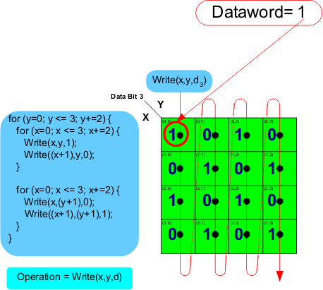

Checkerboard data sequence for entire memory core
In the figure below, an outer for loop with a y variable is added. Each time this for loop executes it will operate on two columns at a time. Because two columns are operated on per execution of the outer for loop the y incremented is set to y+=2 and in the second inner for loop 1 is added to y to select the second column of the pair.
